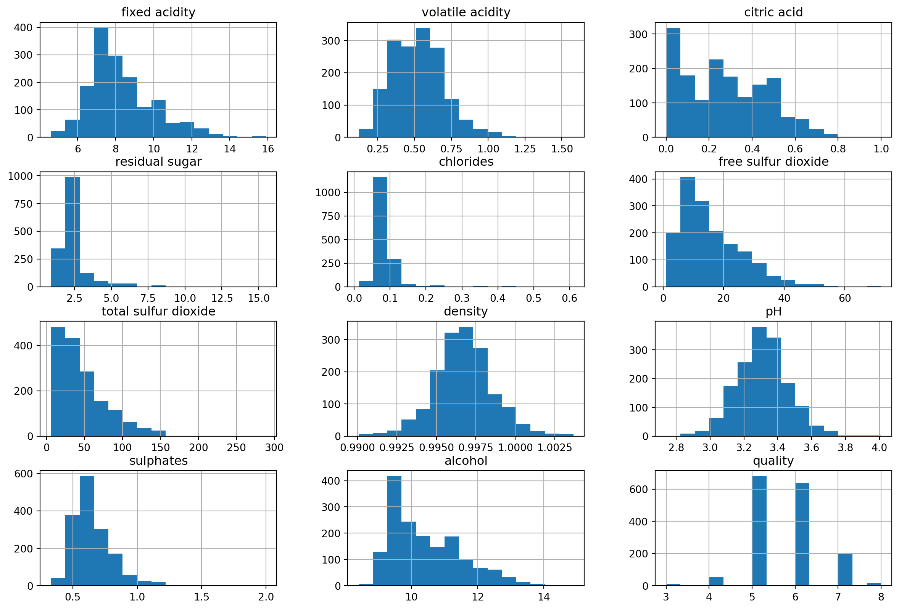
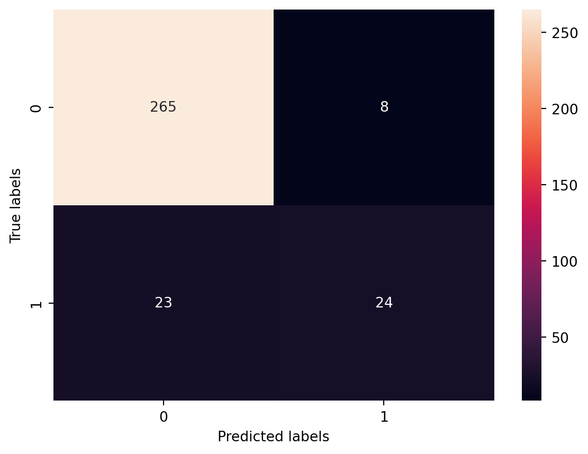

import pandas as pd
import numpy as np
import matplotlib.pyplot as plt
import seaborn as sns
from sklearn.model_selection import train_test_split
from sklearn.ensemble import RandomForestClassifier
from sklearn.metrics import classification_report, confusion_matrix, accuracy_score
# Load the dataset
dataset = pd.read_csv('winequality-red.csv')Classification
Classification in machine learning is a type of supervised learning approach where the goal is to predict the categorical class labels of new instances, based on past observations. In simpler terms, it involves categorizing data into predefined classes or groups.
We will be using Random Forest Classifier model.
Random Forest is an ensemble learning method used for both classification and regression tasks, though it is more commonly known for classification. It operates by constructing a multitude of decision trees at training time and outputting the class that is the mode of the classes (classification) or mean prediction (regression) of the individual trees.
Step 1: Importing the Dataset
Start by importing libraries and loading the dataset.
Step 2: Exploratory Data Analysis
# Display basic info
print(dataset.info())<class 'pandas.core.frame.DataFrame'>
RangeIndex: 1599 entries, 0 to 1598
Data columns (total 12 columns):
# Column Non-Null Count Dtype
--- ------ -------------- -----
0 fixed acidity 1599 non-null float64
1 volatile acidity 1599 non-null float64
2 citric acid 1599 non-null float64
3 residual sugar 1599 non-null float64
4 chlorides 1599 non-null float64
5 free sulfur dioxide 1599 non-null float64
6 total sulfur dioxide 1599 non-null float64
7 density 1599 non-null float64
8 pH 1599 non-null float64
9 sulphates 1599 non-null float64
10 alcohol 1599 non-null float64
11 quality 1599 non-null int64
dtypes: float64(11), int64(1)
memory usage: 150.0 KB
None# Summary statistics
print(dataset.describe()) fixed acidity volatile acidity citric acid residual sugar \
count 1599.000000 1599.000000 1599.000000 1599.000000
mean 8.319637 0.527821 0.270976 2.538806
std 1.741096 0.179060 0.194801 1.409928
min 4.600000 0.120000 0.000000 0.900000
25% 7.100000 0.390000 0.090000 1.900000
50% 7.900000 0.520000 0.260000 2.200000
75% 9.200000 0.640000 0.420000 2.600000
max 15.900000 1.580000 1.000000 15.500000
chlorides free sulfur dioxide total sulfur dioxide density \
count 1599.000000 1599.000000 1599.000000 1599.000000
mean 0.087467 15.874922 46.467792 0.996747
std 0.047065 10.460157 32.895324 0.001887
min 0.012000 1.000000 6.000000 0.990070
25% 0.070000 7.000000 22.000000 0.995600
50% 0.079000 14.000000 38.000000 0.996750
75% 0.090000 21.000000 62.000000 0.997835
max 0.611000 72.000000 289.000000 1.003690
pH sulphates alcohol quality
count 1599.000000 1599.000000 1599.000000 1599.000000
mean 3.311113 0.658149 10.422983 5.636023
std 0.154386 0.169507 1.065668 0.807569
min 2.740000 0.330000 8.400000 3.000000
25% 3.210000 0.550000 9.500000 5.000000
50% 3.310000 0.620000 10.200000 6.000000
75% 3.400000 0.730000 11.100000 6.000000
max 4.010000 2.000000 14.900000 8.000000 # Check for missing values
print(dataset.isnull().sum())fixed acidity 0
volatile acidity 0
citric acid 0
residual sugar 0
chlorides 0
free sulfur dioxide 0
total sulfur dioxide 0
density 0
pH 0
sulphates 0
alcohol 0
quality 0
dtype: int64# Visualize distributions of variables
dataset.hist(bins=15, figsize=(15, 10))
plt.show()
Step 3: Data Preprocessing
# Handling outliers or scaling if required (depends on dataset inspection)
# from sklearn.preprocessing import StandardScaler
# scaler = StandardScaler()
# X_scaled = scaler.fit_transform(X)
# Convert quality ratings into binary classification (good or bad)
dataset['quality'] = np.where(dataset['quality'] > 6, 1, 0)Step 4: Splitting the Dataset
X = dataset.drop('quality', axis=1)
y = dataset['quality']
X_train, X_test, y_train, y_test = train_test_split(X, y, test_size=0.2, random_state=42)Step 5: Building and Fitting the Model
classifier = RandomForestClassifier(n_estimators=200, random_state=42)
classifier.fit(X_train, y_train)RandomForestClassifier(n_estimators=200, random_state=42)In a Jupyter environment, please rerun this cell to show the HTML representation or trust the notebook.
On GitHub, the HTML representation is unable to render, please try loading this page with nbviewer.org.
RandomForestClassifier(n_estimators=200, random_state=42)
Step 6: Model Predictions and Evaluation
# Predictions
y_pred = classifier.predict(X_test)
# Evaluation
print("\nConfusion Matrix:\n", confusion_matrix(y_test, y_pred))
print("\nClassification Report:\n", classification_report(y_test, y_pred))
# Feature importance
feature_importances = pd.DataFrame(classifier.feature_importances_,
index = X_train.columns,
columns=['importance']).sort_values('importance', ascending=False)
print(feature_importances)
Confusion Matrix:
[[265 8]
[ 23 24]]
Classification Report:
precision recall f1-score support
0 0.92 0.97 0.94 273
1 0.75 0.51 0.61 47
accuracy 0.90 320
macro avg 0.84 0.74 0.78 320
weighted avg 0.90 0.90 0.90 320
importance
alcohol 0.171496
sulphates 0.120028
volatile acidity 0.110332
density 0.089608
citric acid 0.089036
total sulfur dioxide 0.086302
chlorides 0.074355
fixed acidity 0.070879
residual sugar 0.067359
pH 0.060622
free sulfur dioxide 0.059981Step 7: Visualizing the Results
# Confusion matrix visualization
conf_matrix = confusion_matrix(y_test, y_pred)
sns.heatmap(conf_matrix, annot=True, fmt='g')
plt.xlabel('Predicted labels')
plt.ylabel('True labels')
plt.show()
Step 8: Testing Accuracy
print("Accuracy:", accuracy_score(y_test, y_pred))Accuracy: 0.903125